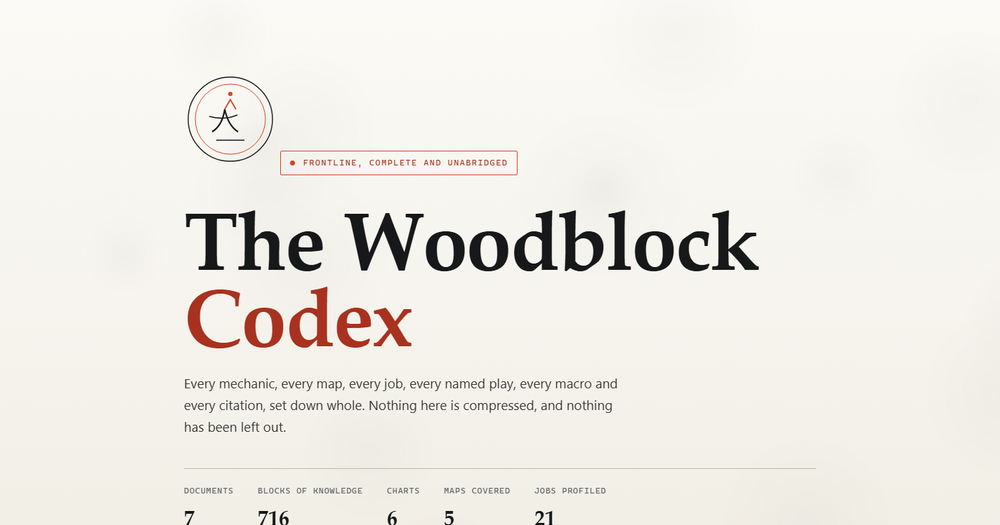
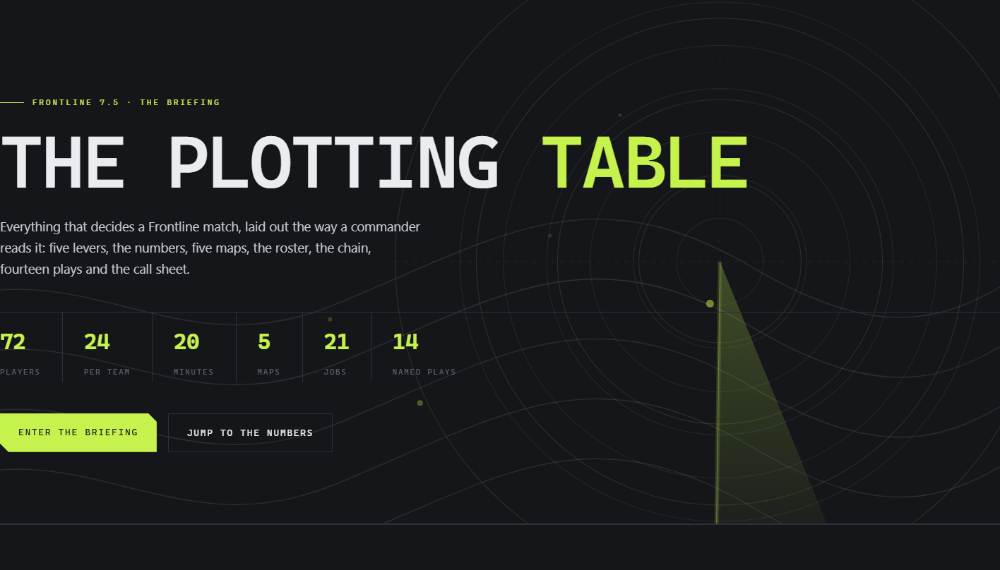

Frontline · reference patch 7.5
Every mechanic, map, job, named play and macro in the FFXIV 24 against 24 against 24 battleground, written up twice. Take the whole archive, or take the briefing. Both are single files with no external assets, so they work offline and load instantly.

Document I to VII · unabridgedEverything, set down whole and nothing left out. Mechanics, all five maps, all 21 jobs, the 14 named plays, 27 bilingual callouts and every citation behind them.
~166,000 characters 51 tables 27 copy-ready macros 7 documents Open the archive
Eight plates · the briefingWhat decides a match, laid out the way a commander reads it. The five levers, the numbers, the five maps, the roster, the kill chain, the 14 plays and the call sheet.
~10,000 characters 8 plates 6 charts 14 named plays Open the briefing